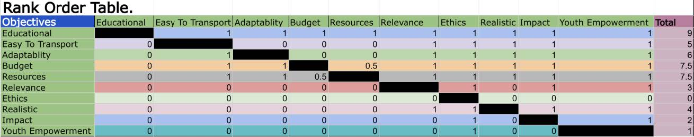
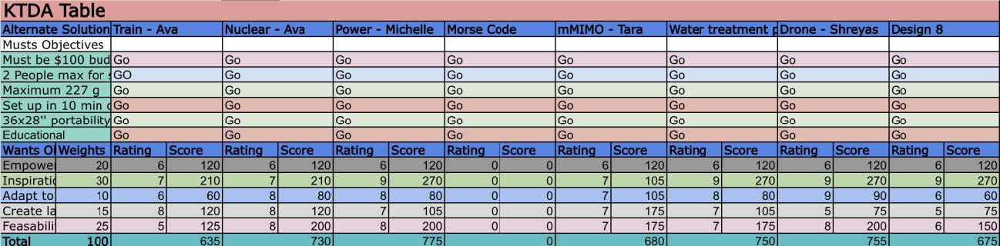
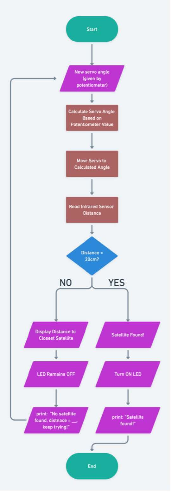
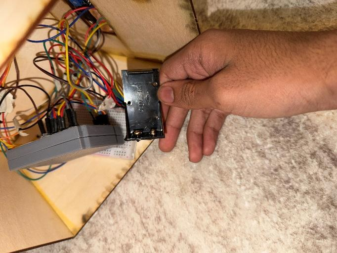
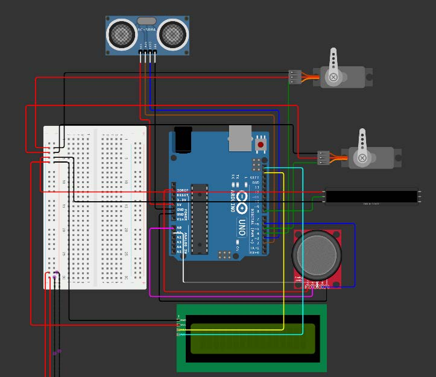
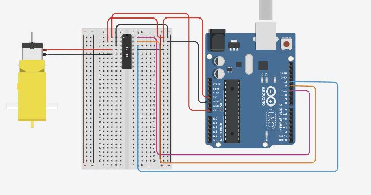

The engineering design process (EDP) for the "Science in Orbit" exhibit was a highly structured and iterative cycle, ensuring that every design decision was grounded in stakeholder research and technical feasibility. The process began with an extensive Problem Definition phase during Milestone 1, where the team conducted in-depth analysis of potential users, specifically children aged 7-11 in underserved communities. By gathering over 20 academic and scientific sources, the team mapped the needs, pain points, and motivations of these children, revealing that they are most motivated by tangible, personally relevant experiences. This research confirmed a significant gap in portable, low-cost, physically interactive exhibits focused on communications infrastructure, which shaped the final design brief.

Phase 1 Selection
Rank Order

Phase 2 Selection
KTDA Analysis
During the Solution Generation phase (Milestone 2), the team utilized a variety of structured ideation techniques, including individual brainstorming, round-robin ideation, analogical thinking, and a structured idea list review. This broad exploration led to diverse concepts ranging from magnetic levitation trains to nuclear energy simulations. To select the most effective solution, a two-step process was employed: a rank-order chart followed by a Kepner-Tregoe Decision Analysis (KTDA). Concepts were scored against MUST criteria, such as fitting within a transport container and staying under a $100 budget, and WANT criteria, including modularity and visual appeal. The satellite orbit concept emerged as the winner due to its strong visual impact and clear connection to real-world technology.

Fig. 3. Detailed user interaction flow showing the logic of the satellite tracking game.
The Implementation phase proceeded through five distinct stages: cardboard prototyping, CAD development, 60% proof of concept, 90% prototype, and the final prototype. Initial cardboard models explored the physical geometry and the feasibility of a rotating ring mechanism. As the project progressed, SolidWorks CAD models were developed for the satellite bodies and central Earth housing. A significant technical pivot occurred when the team switched from a Raspberry Pi Pico to an Arduino-based system to ensure better compatibility with MATLAB for real-time radar-style visual output. Each milestone involved rigorous testing and user evaluation, leading to critical design changes such as replacing string-mounted satellites with rod-mounted ones for improved stability and visual clarity.

Milestone 4
Initial Wiring

Milestone 5
Refining

Milestone 6
Final Circuit
The final prototype consolidated the satellites and Earth structure onto a single platform, incorporating space-themed aesthetic elements to maximize engagement. Detailed wiring and soldering were key areas of improvement throughout the process, as the team moved from loose breadboard connections to more robust soldered circuits for the final expo delivery.